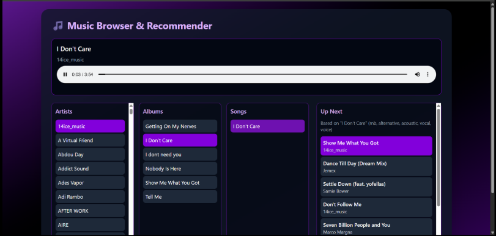
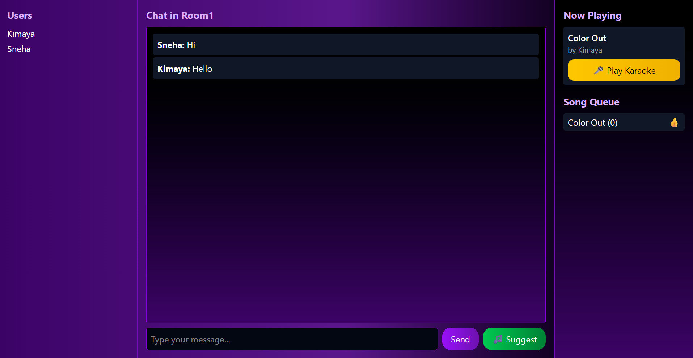

Zylo — Collaborative Music Platform


The Problem
Evaluating the quality and suitability of music in a shared social context remains challenging because current music platforms focus predominantly on individual control and personalization. This leads to lack of collective preference reflection and absence of native collaborative mechanics.
The Goal
Zylo is a proposed collaborative music platform designed to overcome the limitations of single-user control in shared social listening environments. It introduces a highly interactive and democratically governed queue system. The platform features real-time, instantaneous voting on suggested tracks and utilizes the Least Misery Strategy (LMS) for group consensus. Furthermore, Zylo integrates advanced audio features, including AI-powered stem separation for on-demand karaoke track generation.
Project Timeline
20/08/2025: Completed literature review
03/09/2025: Finalized tech stack
17/09/2025: Set up karaoke pipeline
01/10/2025: Implemented chatroom functionality
08/10/2025: Created first draft of UI design
15/10/2025: Completed frontend
22/10/2025: Built project locally
19/11/2025: Completed deployment